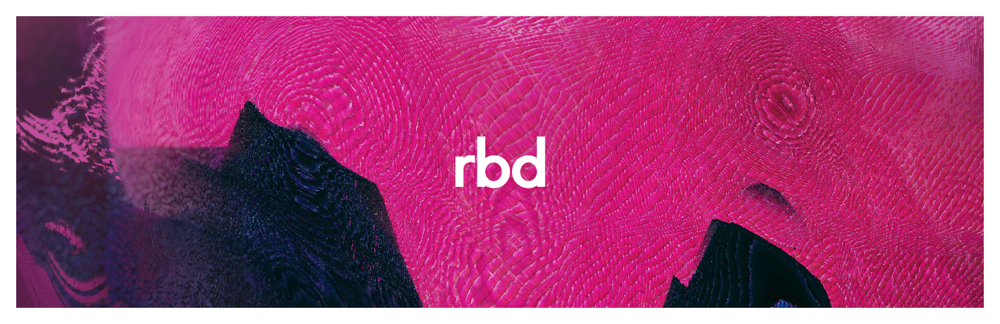

̢̬̟͈̭͑͋́̌͜ ̵̲͓̖͈͔̺͕̭ͥ̾̎̋ͧ̕͟ ̡̗̠̤̗̬̘̮̹͕̲̗̞͇̇͌ͩͤ̂ͭ̍͋̋̀̎̎̈́̉ͮ́̕͡͝ ̶̢ͧ̓ͧͦ̿̐̊̏̋̌̅͊̿͌̌̀ͮ͘҉҉̖̺̻̪̞͍ ̪̬̻͔̹̦̻̙̯͇̜͓͓̝̤̇͆̇ͥ̔̄͒͌ͣ̏͟͢ ͖̹̠̯̔ͯ͑̒ͤͯ͛ͩ͗͌̀͘͞͠͠ ͨ̎̉ͬ̾͊̽̉͆̋̚͠҉̟̠̩̻̤̜͔̤̙͚͚̟̟̘ͅ ̶̴͓͙͔̖̘̤̠̻̖̹͚̭͉̠ͨ͋̏̎ͣͯ͒̚̕ ͂ͫ̎̔̄̑ͤ҉̵͙̘̫͖̤̱̥̖̟̗̳̜͓̩͞ ̶̶̨̮̜̤͍̗̦̻͍̘̰͔̣̊̊͗ͦͤ̊̏͑ͮ̓ͫͅ ̵͖̻̼̯̯̳͈͑ͮ̀ͪ̉̋̏ͧ̚ ̴̡̼̪̝͓͎͉̭̳̫̰͖̫̙͋͗̋͗ ̛̹̻̮͖̩͖͚͙͆̈́̈́ͫͮͭ̄͑̾̕͠͝ͅ ̶̨́̈ͧ̃ͩ͐ͭ̔͑́ͤ͆̾̅́͡҉͇̳̹̤͍̙̘̙̹͕̠̲̹̟̪ ̧̜͙͇̹͎̪̞̩͈̱͍̻̼̳͍̇̇̋͑ͦ ͭ̃ͯ̌͗͗͑̏͐͑̚҉̬͈͉͖̻̪̗̗̼̟͕̀͝ ͭ́̄̋̏̑͆ͯͫ̑̓̊̈ͪ̎ͪͯ͛͘͡͏̷̶͍̠͇̦̲̺̤̙͕̱͙̻̫̥̤̮ͅͅ ͈̰͉̞͔͎̰̤̾̏̓̏ͧ̌̄͊̎̿̀͠ ̸̭̞͙̱̮̦̥̩̟̠̞͚ͩ͐̂͌ͯ͠ ͌̔̒͗͟͏̧̩̙̖̥̣͚ͅ ̨͉̮͍͔̇͑̎̄ͣͫ͗̉͑̒̄͛̑͒ͥ́̕͢ ̸͇̼̪̩̜͓̯̯̞̥̳̗̻̗̂͂̿̓́̕ ̧͍͕̭͖͈̻͙͖̘̫ͧ͋́̄̉ͥ̒̎̈́ͦͬͩ̅̊̽̾̾͟͝͞ͅ ̸̠̱̰̱͓͙̼̳̤̟̦̬̣̻̐͐̈́ͤ̓̀ͩ́ ͛̈͆̌̄ͬͥ͂͂ͭͮ̄̌͘҉͠҉̦͉̰̙̗̟̟͉̜ ̵̸̧̩͇̺̯̩̠̺͉̗͎̮̯̜̜̻͇̫̅ͪ́͌̿̑̊̈͑̒ͧ̑͒͒̍ͤ̎̕ͅͅ ̷̶̷̢̬͔͍̦̝̪͓̭͖͙̦̻͓̫̀̓͑ͤ̀͞ ̸̵̨̤̯͈̳̆̂̓ͩͫ̃̓͒ͣ̐ͯͩ̓͂ͩ ̸̊̐̌̾͛͡҉̟̺͍͉̭̥͈̻̙̫̗̮͓͔͕̦̞͈̪ ̴̧̧̧̬̮̤͆͑̃̎̌ͣ̈́͛ͭ͗ͮ̏̂̚͜ ̸̧̛͙̜̟̱̐̍͆͒ͦ͐̃ ̷̶͔̬͔̩̥̼̠̓͛̿̋̐ͧ̚̕͘͡ ̴̵̴̛͖̙̥̣̘̳̳̭̠̪̦̞̜̋̈͊̓͠ ̸̢͎͓̫̭͍͙̋̂̇̄ͨͯ̉ͬ̆̔̔͌̈́̄̽ͯͧ͋͆͡ͅ ̧̧͍̺̭̞̙͍̰̪̥̠̬͇̥̪͔̈ͨ͗͊͟͟ ̶̡̼̭̥̗̰͉͇̣̣͙͚̗ͭ̒ͣͧ̿͂̑̽͑̂̓́́́͡͠ ̨̢̲̦̳̞̩̩͓̮̙͉͙̳̦̟̬͎̼̥ͤ̈ͪͤͅ ̩̖̗͕͍ͭ̈́͂͒ͬ͐̓̄ͩ̚͘͠ ̵̨̘͍̮̖̯̙̐̽̎͌̄̊͒̄ͮ̄̕͢ ̛̮̠̹̤͕͙̲̲̤̹̩̰̭̮͕̘̅̅̔͂͑ͣ͛ͨ́̄͐̀̈́̓̓͂̀͘͝ ̶̶̴̬̝̣̟̘̗̜̻͔̮̘̪̈ͤ̃ͩ̐̓ͧ̀̏ͫ̂ͤ̽͜ ̵̧̛̗͚̯̗͙̪͕̯͔͍̰̘͙̼̻̗̠ͨͨ́ͭͧ͢ ̵̷̮̰̱̬̻̙̓̈͋͛̒ͯͥͯ̃͒͊̏̚͘͜͜ ̡̮̭̲͖̯͍͎̙̮ͯͧ̍ͧ͛̏̄͑̄͞͠ͅͅ ̨̝̮̞͕̤̥̠̝͛͆͂͋̍̓̂̿͐ͮ̎͐̋̍ͫ͛̓͞ ̴̧̛͕̳̳͇͓̍̈́ͣͦ̋͊́͠ ̷̷̴̳̗̺͙̫̱͉̹̣̣̼ͪͦͪͧͯ̅̾́ ̨̡̬̖͔̹̝͍̹̥̫̦̦̹ͪ͋͑̅ͦ̈́ͤͤ͐ͩ̄́ͭͤ̂ͤ̇̒͡ ̛̞̘̳̹̹̥̻̗̖͍̯ͪ͂͑ͤ͑ͬͭ̽̂̄̃̃̈̓̂̂ͫ̚͘͘͠ ̃͑̌̎͐̄̓͊ͪͦ̏҉̰̞͙͍̰͉͍̱͓̤̻̰̼̻͓͓͡ͅͅ ̱̼̥̻͚̲̜̹̰͍̹̔̈̋͊̀̿̃̃͊ͫ́̔̀̚͝ͅ ̴̨̨̙̹̳͉̥͓̦ͯ̈́͋̆̅̈́́͠ ̶̶̸̩͕̦̞̮̩̺̤̱͔̫͈̲̤͆̉͂̎ͤ͑̇̐ͬ̈͛ͦ́̚͜ ̶̧͔͉̭̩͍͙̱̰̺̞̱̙͙͔̜̦́̔̿̍͝ͅ ̨̙̣̝̯̩̱̤̯̰͍̗̼̭̜̬̹͇̌ͨ̀̈̌̀̚͘ͅ ̸̴̨̜̻̺͙̪͇͓̖͔̻̬̩ͥ̂̔̅̊ͧ͊ͩͫ̍ͩ̊̅́̃̿̉ͧ̚̕͡ ̷̭͍̯͕̯͇̟̼͔̜͎͛ͤ̍͒̅̐̒ͬ̍ͯͦ̒̓̒͑̀͡ ̴̷̸̷͇̲̳̱̳͙̘̖̜̼̙̦̩͍͍̫̉̓͋ͣ͒ͪ̊͢ ̒̔̋ͯͨ͒̅͏̡̲̩̱̘̳̺̳̜̖̼̮͙͜ ̡͉͎̝̞͙̣̝̠͓̖̲̞̝̩̟̉̍ͫ͢ ̷̛̹̬͎̺̓ͭͯ̋̀̄͑ͦͪͭͩ͛ͫ͌̾̉͐̑̚͝ ̴̛ͨͤ̇͌͐͆̌ͪͤ̈̍͂ͥ̎́̒͂̕͏̺̞͎̜͚̮͔͠ ͓̺͖̳̬͉̙̺̬̥̩̯̮͎̘̘ͥ̿ͮͤ̑̒̚͡͞͠͡ ̸͗̾̔͊͂̀̐̄҉̥̠̳̤̹̪͎̹̬ ̶̶͇̗͔̮̯̤̟̺̮͓̟̱͖͕̰͚͖͉̟ͬ̈͊ͬ̌̐͒ͫ͘͜ ̴̛̣͕̼̤͉̼̯̖͙͎̘͕͖͇͎̳̹̟̓̾͂ͫ̈́ͭͪͪ̎͘͠ ̱̥̲͈̞̩̬̹͊̅ͫ̂͂͂͗̐͐̊͐ͯ̅͗ͮ̈̈́ͩ͘ ̸̢͈̘͍͍̥͙̲̟ͩͥͧͭ̐͋̓ͦ͐̕ ͬ͐́̆̔́̀̎̽ͩͩ̚͜҉̭̘͖̺̘̭̰̖͇͈͇̯̥̦͚̣̯͉̱ ͉̺̳̭͙̮̮̣̮̩̤̮͒͛̃͂ͦͥ̌̎ͬ̆̏́͝ ̏̏̑͒̓̉̈͐ͦͫ͏̶̛͖̦͇̩͈̤͈͡ͅ ̨̠̞͈̠̫̂ͤ̍̽͠ͅͅ ̵̴̡̯̹̝͔̬̳̻̬͕͖̥͕͚ͬ̽́ͯ̾̓ͨͭ̓ͬ́̂ͬ̌ͬ ͦ͌̊ͧ̑̋͑͋͠҉̼̦̦̠͕̙̝͉͎͚̞̙̟̟̣͎͟ ̨̧̧̺̠̞̈́̈́̔̎̿ͤͣ̆͌͐̓͂́̕ͅ ̸̵̢̞̬͚͎̜͎͚̲͉̞̓̔ͪ̈ͨ ̨̝̳̙̰͖͓͚̩̱̗̯̱̗̝̠̱̲̫̃̿ͪ̀̀ͣͤͬ̅̓͊̑ͮ́̚͞ ̠̩͈͈̗͇͎ͩ͒ͣ̀̓̌̓̅ͩ̃̂ͦ̂̂̃͂̓̿̕ ̵̢̹̩̱̱̦̓̆̏̓̒̋̋ͦ̀͜ ̷̒͂̓͆̓ͫ̏̓̇͒͗͗͛̉̽̓̊ͫ̃̀͏̧̭̦̯̹̦̳̲̯̤̮̣̭͕̠͠ͅͅ ̛̊ͤ̇̍̆͊̉ͦ͑̉͑̈́ͨ̓̾̌̚҉͎̬̺̤ ̓͂̏ͫͬ̅̒ͨ̎͒̓́́ͣ̿̅̽̀͏̝̜̦̹͍̘͕͎̣̠̳̱̬͖͉̞̀́͟ͅͅ ͆̐̐̾ͮͨ̓̈́̆͛̍͛̓ͨ͆̄ͫ҉͚̼̗͈̭̫̗̳̱̘͟ ̧̬̼͍̪ͮ̃ͮ̈́ͭ̄͛̋ͣͣ͑͟͠͞ ͇̮̯̯͈̲̹͔ͯ̅ͯ̿ͤͫ͊̎ͪ̑̈̊ͥ̀̕͟ͅ ̨ͤ̉̽̏ͦͤ̓̃̄̊̿ͫ̋ͪ̐ͯ̏̊͝҉̬͉̥͓͕́ ̷̢͈̞̳̠̞̞͙̰͖ͩ̾̔ͭ̉ͧͣͦ̓ͅͅ ̷̼̘̩̝̬̯͔̺͓͈͔̙̽̀̄ͤ͋̃̀͟͡͠ͅ ̵̫̩̭̣̙̭̾ͭͫ̉̏͛̈́͒́̈̓ͦ̓ͦ̑ͪͨ͜͝͞ ̥͉̺͎̺̋ͤͫͣ̊̿ͩ̔͋ͩ͊̇̕͡ ̶̦͚͈͕̫͉̪̖͍̫̯̤̘̮͙̲̲͎͎̌̋ͩͨ̀͗͂͋͌ͥ̄͋̓̏͢͢ ̨̛͔̱̼͙̥̺̖͛͛̾̇̔ͮ͘͘͜ ̟̘̦͇̟̹̫̦̰̫̖̘̱̹͔͌̔̌ͬͬ̔ͭ͗ͤ̎̉̃̔̕͞ ͣ͛͛̈̀̆̅̉̆ͨ҉̧͚̝̜̀̕ͅ ͣ́ͩ̋̓͆̃͌͏̛̻̭̳̜̖̰̹͎̟̙͕̪̺͢ ̴̩͔̬̺̳̲̙͗̿̓ͣ̆̒̂̐̄ͥ͒ͭ͂̏̌̊ͭ̃͛̀͜ ̷̧̭̠̫͛̊͆̎̽̆̑̎͢ ̛̳͚̪̰̎ͣ͗̅̇͗ͪͣ̍̃̐ͣ́ ̧̢̡̠̹̹̼́̾͐͑͗͢͢ ͔͔̪͇̞̜̻͎͗ͦ͌͊̊ͧ̑́̍̌̿̅̉ͥ̃̚̚͡͝ ̴̨̧̙̯̙͍̼͍̙̤͕̘͂͛̅͒̓͑̾̌͐̂̈ͤ̚ ̡̲̰̠͔̼̙̣̥̦̯̼̳̟͇͐̽̽̊̌ͪ̏ͨ͘͡ͅ ̶̷̩̞̜̟ͣ͋͛͂̈́͒͐̋͋ ̶̠̮̘̣̬̺͖͕͒ͭͭ̀̊ͤ̏́ ̢̔̽̊́͑͆ͩ͊̓ͨ̆̐ͪ̋͋҉̵̭̭̱͓̗͇̜̪̺̺͉̭̱͈̝̤̦̖̠͟ ̶̴̬̱͕̻͚̟̦̖̮͕͖͌̏̅̑ͨͪ̃̃̊̉̈́͛̄̈́̀͡ ̇̉͒ͦ̂ͭ͐͊͒̏͆̅̍͒҉̢͕̩͔̪̭̭͔̘̰͕̭̩̮̮͞ ̴͈̠̹̻̠͎̪̹̰̻̦͈̯̅̃̓͑͐͒̏ͧ̐͒̏̔̀̕͢͠ͅ ̨̜̰̘͍͎͇̪͓̤͙̮̠̃̿ͥ́ͩ̄̈́ͫ̉̏́ͩͩͫ̽̎ͯͣ͂̀ ̢̛͖̖͙͔̥̣͍̙̟̝͙̬̦̙͍͕̪̏̾ͪ̉͑̕͡͡ͅͅ ͯ̑̇̍͏̸̶̩̰̣̠̗̱̹̙̻̲̫͖̠̕͞ͅͅ ̷̮̯̤̟͈͔̺̮̳̦̯ͮ̎͑ͩ̀ͣ̆ͬ̇ͨ́̚͠ͅ ̸̧̫͎͖̖̯̼̠͔̭̺͚͓͚ͤ͋̍͌̿̐ͤ̈́̍̾̔ͮ̽̿̊͐ͥ̃͘ ̵̢͉͎͕̩̰̹͇͖͉͍̙͇̣͎̠͉ͯ͛ͫ̌͋̋͛͊̍ͮ̈̈́̇͘ͅ ̷̶̰̣̝͍̣͓̑̍ͣ͌ͪͪ͂̄ͮ͛̄̀ͬ̀̈͋ͧ̕͠ͅ ̸̧̛̘͈̳͙̠̹͇̤̼͙̳̍̏̃͛͝ͅ ̸̛̌̑͊̐̅ͩ̌ͭ͋ͬͫ͠͏͇̙̦͇̙̪̦̻̜͔̠̖ ̡̄̉ͩ̏̑ͮ̈ͦ̏҉͚̬̯̹̠̝̞͍̟͕̤͕̝͉̹̻͠ ̵̊̉̉̔ͯ̇̿͆̍̈̚҉̝̣͉͙͕̻̠͖̠͘ ̫̹̤̩͖̩̭̿ͥ͑̇̀̋̿́̚͘̕͟͡ ̛̃ͬͧ̎ͥ̒ͮ̀͑ͥ̇ͪ̿̉͂̃̾͆̀̕҉͚͕̱̳̭͎̯̜̱̳̲ͅ ̨̓́͒ͯ́̍̽ͬ̾͋̚͏̷̵̜̭͔̻̫̘̟̲ ̠̲̰̹͕͚̙̘ͦ̾ͩ́ͤ̎̏͋̈́̽͂ͣ̌ͪͮ̃̌ͤ̚͜ ͋͂̓̌̌͆͛̓̚҉̦͖̖̳̗̱͚̀͢͜͠ͅ ̷͑̉͐ͫ͛̄ͧ̔̿̈́ͣ̏͋͐ͬ͏̤͙̞̺̳̹̬͈̥̮͙̳͝ͅ ̶̛̲̭̝̤̩̩̗̬̱̥̩͓̣̞͇̹͍͂ͭͬ̽ͮ̚͟͠͞ͅͅ ̶̶͎͇̩̤̜̞̙͍̤̟̼͍̖͔̍͌ͬ̈̉̉͊ͣ͟͜ ̢̡̾̓̐̆͋̓̐̑ͥ̾͐̍̆̊̓ͪ̾́̕͏̼͍̺̦̺̫ ̵̸̟̠͍̻͉͓̙̟͕̖͔̭̫̣ͩ̓̉̈̋̄ͤ͆̾͌͜ ̷̡ͭ̊̐̏̄ͨͫ̈́̎ͦ̄̌̀͐̾ͮ̓̌͠҉̮͙̩̲̟̙ ̢̡̖̯͕̹͚̫͖̻̝͎̂̆ͫ̓̊̾̄ͨ̄͒͌̕͝ ̵͒ͥ̉̊̅͊̕͏͏̰̪̩̪̜ ̨̡̲̼̗͓̲͕̮ͤ͂̌̓̓̀̆ͫ͡ͅ ̴̛̎̑ͦ́̋ͬ̇̌̔͆ͪͯ͂̊҉̲̹̱̞̕ ̶̧̺̝̟̤̖̥̞͛̐̿ͦ͆̅͊ͭ̉̿ͪ̽̅̐ͥ̏ͮ͘͞ ̢̢͙̦͉̫̹͇͉͙̝͍̙͙̪̮̩͒̉̐̈́̒̌̊ͤ͐̅̈̊́̓ͭͥͅͅ ̧̡̧̲̗͚͈̤̪̣̉̎̒̂ͭ̇̄̈́ͮ̅́̋̈̾̇̉ͯ͞ ̵̣͍̺͈͓͉͙̦̟̟̼̞̇͆̑ͩͦ̚̕ ̴͎͚̩̼̭̜͕͙̪̳̮̖͙͎̓͆̋̋͋ͮ̔ͤ̄ͣͥ̓ͫ͗̂̑͘ ̨̭͙̖̦̺͎͚̍ͭ͑͒ͦͧ͆ͯ͒ͫ̊ͤ͘͟ ̈̈́͛ͫ̓̓͑͏̱̬̻̺̠̟̜͚̘̳̰̩̼͎͢͡ ͣ̂͌́͊҉̢̢͏̴̥̻̠͇̰̹̙̣̩ ͦ̒ͬͩͨͪͬ̓̂ͫ̓ͮ̈́̆҉̶͈̞͕͖͍̜̦̱̱̗̲ ̨̯̰̬͇̺̟͍̻̼̙̤̬̉ͮ̄̎̃ͫͫ̈́̍͛̾͗̾̀ ̡̢͔̮͔͉̜̻̘̺̹̮͍̦̟̬̫̼̀̄̀̈́̔͆ͮ͗͋͋ͪ͐͌ͮ ̵̛̰̻͚͈̺̝̪͓͙̭͖͚͓̖̺̤̟ͥ͌ͣ͑͑ͯͣ͆̋͊ͪͥ̕͢ ̵̜̯̼̺̹̼͈͎̦̮̩͉͇̣̭̣̻͓ͪ͐͊͋ͬͮ̀̽̎ͯͭ̋ͫͩͣ̍͊́͘ ̨͉̜̤̗̖̥̬̹͆ͬ͐̄̈͌̾̄̀ͤ̀ͩ̉̔̅̇̚̚ ̢̭̥̥͎͈͓̩̻͔̻̦̜̦̐̑͐ͧ̑̌̍̈͆͐̌̌̋̾̕͡͠ ̵̧̧̫̘̥̫͈̝̯͉͓̗͓̟̫̗̦͓̲́̿ͯͦ͗ͤ͋̒ͯ̐ͣ̄͛̓̊ͥ͌̋͞ ̷͈͈̩̳̰͙ͪ̒ͯ͒͞ ͍̼̩̜̗̭̪̮̯̖̳͈̪̝̞ͩͤͦ̍̉̉͐̀̚͢ ̨̛̝͎̲̤̀͒̋͊́͠ ̶̨̛̩̪͓̩̯̤̪̱̮̖͓̹̤̻̻̼͋̋͋̍ͪ̉͐ͪͧͪͅ ̛̭̦̹͎͎̦͉̋̃ͦ̓͆͌͐ͥ̔ͭ̓͐͊ͮͧ̎̄ͮ͞ͅ ̴̨̨̠̻̻̘̠͈͗ͨ̂ͨ̾̒̋̄̆͂ͮ̚͞ ̣̞̪̖̫̥̬̠̺͔̩̦̘̺̒ͧ̒ͨͤͥ̆͝ͅ ̶̷̡̮͉̭̺͚͉̟͉̝͕̞̱̜̂͊̽ͩͯ̿ͨ̾̂ͦ̌̏̓ͨ̄ͥ͋͠ ̾͑̏́̈́̂̊ͮ̊̅̉̊̏̓͋͛͋̈́̀̀́͏̩̦̫̬̪̗̻̟̱̳͔ ͗̑̀ͯͨ́͆͂ͪ͒ͬ̌͆ͫͪ̚҉̛̜͈͍ ͇̹̯̦̤̞̫̪̲̭̖̠̻̦̪̳̪ͣ̐͛̃̚͟͢͞ͅ ̶̨̢̣̘̬̭̬̬̩̰̹͔̺̣͔̞͓̜̗͎̂̓ͦ̇̌ͫ̃̌̕͞ ̸̷̮̙͓̦͙͉̺̦͚ͯͤ̔̔͗̈́͑͆̉̾͘͠ ̶̧̳̬̬̖̥̰͙̤̳̦͍͌ͯ̔̈́̐̀ͅ ̴̢̦͚̯̣͙̙͋ͣ̌̿̈́ͥͫ͗ͧ̚ ̙͉̗̭̺̲̺̩̗͙̩̤̼̙͎̰̃ͩ̽̽͑̌ͩ̌̀ ̣̤͙̙͓̊͂ͭ͆̎ͤ̚͞͝͝ ̸̮̘̤͔̞̂́͑̊͒̾̄͜ ̸̤̥͎̦̖̲̦̬͈͍͕̟͉͐̽̄̀ͦ̎̏̂ͪ̀̔̀̚̕͜ͅ ̜̮̙͙̭̦͚̣͇͈͊̆̐̀͌̎ͧ̐͌̋̍̄͜͜ ̴̡̙̤̜̥̀ͫ̐͆ͥ̓ͨ̂ͅ ̶̪̗͕̥̱͎̬̘͇̙̣̞̰̩̹̦̲͓̿ͬͭ͛͐ͧ̋̂ͤͭ͜ ̢̢̜͙̩̠͓̥̯̼̠͍̩̜̒̊̌͑͌̔̎͘ͅ ̧͈̮̭̤̔̿̑̈ͣ̔̈́́̚̕͞͝ ͓̠͕̝̭͍̻͊͌̈̽̒ͬ̿̐̐́̚͠ ̴̷͈̟̲̣͈͈̞ͧ̋ͪ̏̍͛͝ ̡̓̓ͤͪ̏͆ͫ̍ͭͭͪ̋͂̿̾̂͛ͩ͛̀͏̸̸͍̫̲̼̰̺̱͈̰ ̢̢̢͉̻͖̼̬͍ͬ͆͊̎͠ ̷̧̟̳̙͙̯̘͈͈͔̗̻͓̣͐̈́̒̓͊̈ͧ̉̃̌̊̈̃̆̐ͨͯͤ̃͝ ̢̟̳͉͙͓̘͎̰͉̖̮͙͉̉ͯ͆̆̍ͭ̅̐̾̏̊͒ͦ͘͡ͅͅ ̞͈̞͇̤̲̦͚͙̺͉̮̲ͬ̿̋ͮ͟͝ͅ ̷͐̈ͧ͐̊̄ͫ̋ͪ̋̑ͫ͆҉̙̤̘̦̭̤̗̲͙̖͔̭͉̼̙͔͙ͅ ̴̛̮̻̮͋͆̈͆ͣ̓͆̆͐̋̈́͌̇̓ͥ͠ ͂̓̋͒̎͡͠͏̵̛̟̦̣͎͕̮ ͛ͬͩͦ̍̅̌ͤͧ͒͐̿̏̈́ͯ҉͍̲̺̱̯̮̩̹͕͚̹͈̬̼͘ͅͅ ̵̨͇͕̹̣͖̤̳͓͕̩͉̰͔̞̜͈̌͋̈̈ͭ̔̈̄̇͐̎̈́̐̌͑̚̚ͅ ̢̹͖͍̲̠̻̬͎̻͍̥̮̾͐ͣ̄͠ ̶̷̦̦͎̊͋ͬͥ̎̅̓̿͘͢͞ ̇̅ͯͥ̏̅ͬ͂̅͛ͩ́ͨ͆̄̈̑̄͡͏̡̢͉͎̱̣͓͖̤̭̱̥̪͈͚͓̰ͅ ̈́͌̈́̋͂̒ͬͨͣͭ͒ͦͩ̒ͬ̌͏̣̙̘̭̬ ̵̷̛̭̪͇̬̉ͥ̐̋̓̃͊͗͌͠ ̵͐ͥ̐͌͋͢҉̸͉̯̦̯̞̠͓̺̳̣̜͕͟ͅ ̡ͩ̉ͣͤ͆͐ͨ̐͐̀͠͏̱̻̺̰̰̹̗̪̺͚̼̹̘̱̭̥̻ ̸̶͇̜̜͙̰̫̣̪̫͍̤̝̫̮͌ͩ̈̇ͣͭ ̶͖̭̟̟̝̣̘ͦͤ͐ͩ̿̓ͤ͡͞ ̨ͫͪͤͪ́҉̦̹̭̥͙͈ͅͅ ̛̭̼̱̙͖͍̳̫ͫ̄͐ͭͬ̎̽̉͂ͫ̀ ́̅̔ͥ̃͑͑̋̈́ͬ̉̌̑͋̍ͮ̔͒҉҉̯̰͔͉̜̪̤͓̪̱͟ ͎͙̠̭̥̣̜̖̲̥͉̹̩͔̿̍̿̆̽̉ͬ̈͋ͪͦͮ͟͡ͅͅ ̶̧͎̜̪͎̻̯̬͙̻̠̜̭͎̗̫̞͂ͧ̓̈̉͋ͮͅ ̶̼̜͚͓͚͖͎͉̹̥̦͖̻̘̰̅̍ͥ͑ͭ̉ͥ̓͂͂̈́̀ ̐̓̆̌ͥͨ́̚҉̲̩̝͚̺̝̝̬̦̻̣͎̗̟ͅ ̰̹̬͚̥̪̟̝̟͈̪̪͈̘ͦͣ͗́́̚͜͞͡ ̡̢̺͉͉̭̱͓̮̦̪͙̺̰̥̭ͣͮ͛̆̄ͥͧ͑̉͗̎̌̈́ͦ͂͂̈͊͘ͅ ̷̷̰͈̘̫͍̹̻̘̞̫̱̺̠̝͔̏ͫͪ͊̃̎̂̔̇̅͑ ̸͑̇̆̈́̐͆ͮͧͦ́̓ͭͣ͘҉̣͈̫͇̣̼̥͚̪̞͠͡ ̵̸̙̯͕͈̘̞̙̤̺̘͚̹̞̭̝̻̿ͫͣ̑̈́ ̶̨̿͂͒ͪ̐͊͗͒́҉̡͙̹͇̞̺̪̖̟̼̻͚ ͙͈̝̫̜̬͕̫̱̻̰̥̘̘͇̣̓̽ͦ̒ͪ̋̾̉ͤͬ̓̅ͥ̈́̕͡ ̷̛̇͋̔̔ͯ͒̔ͧͮ̎͡҉̮͈͎͚̜͓͡ ̸͉̰̭̟̠͓̲̑ͧ̎̐̍͊̉̈ͬͧͧ̆̓ͧ̎ͭ͟͝͝ͅ ̵̨̢̱̗̞̙̫̩̻̦̯̜̤̳͓̘̗͈͚̻̏̉͑̏̈͜ͅ ̶̙͓̪̱̜̘̳͉̘̬̟̫̣͖̙̟̜͕̔̔̾̉͗̏ͪ͛̉ͣ͑̏̾̈́̃́̚͘͠ͅ ̷̳̟̳͚̃ͭͧ̐̿̀̚ͅ ̸͒̄̌̎̀̿̌̐̈ͩ͌͗̚͏̶̵̠̥͈̜̠̹̬̗ ̟̮͚̼͇̒ͦ̅̒̓͆͋̓̚͟ ͫ̽͋̆ͦͨ̏͊̾̚҉̙̲̻͓͖̝̹̙̪̞̭ ̵̨̹̙͖̎̋̓̂̂̑̓̑̌̑ͬ̿ͅ ̶̶̡̺̙̹̦̝͙̱̗͎̋̇̎ͫ̀͌͌͗̄͞ ̧͎̭̤̙̺͖̱̖̰͉̍̇̄̍̂̒̒͌̏ͨ̍̃ͦ̂͒̎́̚͞͡ ̸̢͎͚̜͉̲̟̾͋ͯͧͩ̾͑̂ͫ̍̂̅̂̕ ̵̼̦̬͉͕͓̹͚̞͊̾̒ͪ͊ͨ̆͂ͩͥͯ̈́ͣ̉ͭͭ̋̉͜͞ ̴̢̣̣̪̗̻̮̥̘̼̭̹̳̳̮͈̬̞̑̅̃ͤ̍́̍̐̍́͋͑̌̋̀͛̋̈́͂͜͞ ̷̢̰̟̮͕̻̹̠̪̳͎͇̜̹̊̑̀͗ͬ̿̎̂͛ͯͬ̕͘͝ ̸̧̞͎͙͖͔̫̩̭̫̖̣͉̣̏̇̽̎͗́ ̯̲̖̪̪͉̫̀ͯ̎̿̔̀̓̎̇̽̇̌̔͗́̉͠ͅ ̸̴̡͇̫͚̩͇͚̥̠̟̱̺͈͙̭̭͙̥̞͂ͯͣ̈͆̽͋́̓ͨ͛͒̋ͩͤͦ̚ ̢̨̛̫̭̫̖̭͔ͥ̽̎͂͗̍͋̋ͭ̐͆͜ ̷̡̡̗̗̪̰͕̣͎̇͐̐̿ͮͤͮͬ̃̊ͭ͊͋̈̑̇̚͜͡ͅ ̃ͫ̍͋̐͏̴̢̰̬̤͉̻̤̬͙̻́͞ ̴̨̳̱̤̮̝͉̗̞̜̗̬̾ͦ̍ͥ̓̔͛͒̒̌̃ͬͣͨ̄̑ͬ̉̒͜ ̸̢̩̼̦̺̘̭̞̮̻̙͉̫͚͛̓̈́̐ͤ́̎ͪ͞͞ ͍̳̹̥́̊̎͛͗ͯͨͬͫ̈́͢͟ ̵̩̼̟̫͚͉̰̠̩͍̔ͣͭͭ͒ͯͮͯ̅ͨ͊ͥ̅ͪ̈́ͭ̚͝ ̨̖̪̼̜̱̪̗̩̝̥͉̞͈͂ͩ̓ͥͬ̄ͬ̌͌͂́̚͢ͅ ̡̇ͥͣ͒͐ͧͪ͐̄ͦ͐̔ͭ͏̷̱͈͍͎͎̯̮̥̗̘̘͉̱͎̗̀́ ̴̨̹̪͖͉̲̣̤͓̀ͪ͑̍̈ͤ̔̑ͮͨ͑̔̀͢ ̸̧̨̟͇̻̰̣̙̬̻̲͕̗̙̼͇̩͖̠̯͍ͫ͌͗̄ͧ̍ͫͦͨ̃̅̿́̈́͢ ̷̤̟̬̝̲̳̣̥̦̗̫̮̭̜͎̺͖̓̽̾̇̆̌̈̓̑͛̉́͛ͫ͛̂̚͞ ̨͊͌ͮ́̽ͤ͏̥͈̹̞̠̝̻͎̳̙͙͍̳͇̻̮͝ͅ ͙̻͕͍͚͉̝̰͔ͪ̋͂̂ͭ͐̓̾̿̍̆̂̈̐̃̌̕͘͘͟͞ ̷̝͓͖̬́͗̑̋̇͐̍͞͝ ͐ͭ̓̊̽͆҉̴̨̫̮̺͇̜̖̠̻͍͇̮͠͡ͅ ̨̪̟͍̱̱͎̮͈̪̜̫́͋̃̓̅͒ͪ̌ͮͪ̾̚͝͡͞ͅ ̴̡̼͚̻̖͕͇̤̲̦̦̪͓͖͈̣̟́̋͂ͮ̉͆͋͞ ̛̮͈͔͔̜̝̪̫͖̟̦̱̲̳̓ͭ̉ͥ̇͆ͫ͛̀̚͜͡ ͬ͊̽̿ͦ̊҉͏̠̩͙̬̯̺̘̹͎̘̼̞͍͘͜ ̨̜̮̭͚̣̙̙͚̪͖̺̪̫̇̓͋͒ͣ̈́ͭ͗̑ͥ̏ͬ̂̓͠ ̢͚̟̳͉̠̬͍̻̙̭͇͕̘̰̬͌̋̒̎̅̀̚ ̸̨͉͉͙̙͉̮͇̫̥͎͙͎̻̗̺͍̗̯ͦͣ̌̎̃ͮ̃̆̀ͬͭͫ͢͝ ̸̠͕̱͓̥͕̌̂ͫ̎̃̌̔ͪ͗̚ ̛̛̭̭̯̗̞͈ͮ̾ͤ̆̓̆̊́͂́̍̿̿͢ ̢̛̹̰̠̰͕̤͎͍̗̤ͧ̿̓̉͂̚̕ ͇̟̦̦̠̞̻̭̫̞ͧ͊ͧ̾̎ͧ̎ͥ͘͟ͅ ͖̬̤̪̻̼̎̋̇ͩ̅̆́̽̿ͦͣ̉ͧ̄̓͒̇̚͢͠ ͕̝͙͕̲̖̺͈̿̾ͫ͛̆̉̅̀̿̂̓̽̒ͮ͌̂̎̚͜͢ͅͅ ̶̨̢̝̱̣͙̫̘͙͎̣̺͍̼̎̈͆͛ͫ̿̿͆̚͟ ̴̤͈̠̜ͯͪͫ̔̀͒ͮ̓̈̈̄̓͂̐̀̚͞ ̎ͭ͗͆̊̎ͤ̋̏̓̾ͩ̋ͥ́҉̶̠̤͔͓͉̫͖̩̣͇̘̝͇͎ ̼̝̹̝͉ͨͭ̅̆͊̊̐ͬ̆͋̾͑͝͡ ̗͚̺̫̩̞̳̻̜̀ͩͣ͊̏́̕͜ ͕͚̟̯͕̹͓͙̝̘͉͈̈́̽̎͗̏̀̅ͭͫ̏̔̾͡ ̶̙͎̙̪̣̲ͨ͐̈́̇̉͒͌͘͜͜͞ ̸̨͔͚̜̹̼̹̘̮̱͚̰̣̦̮̦̪͔ͬͣ̓͊ͪͮͭ͆̆͛͑̓͛ͨ́̒ ̜͇̲͕̱͉̫͙̮̟̬͙͖̤̝͙̠̔ͬ͊ͦ̎́́̚͡ ̈́ͧ̈́̇ͩ̾͏̢҉͙̱̟̦̘̱̗̪͈̗̠͖̮͚̹̬̫̯ ̴̡͋̌͛̒͆ͦ̄̊ͮ҉͎̗͚̬ ̷̖̰̻̳̥̙̠̥̔͊̏ͥͯͭͬ̾͒͌ͤ̄ͧ̓͋ ̶̜̪̠̲̻̯̦̙̞͚̻̪̼ͧ̀̈́̓͊ͤ̔͋ͥ͐̈́̄̐͐͟͡͝͡ͅ ͯͨ̾ͪ̏̀ͫ͋ͪ͐ͫ̂̈̈ͪͨͮͦ͋҉̶̨҉͍͖͇͙̟͉̼̲͙̯̞͍͎̬̫̞̫ͅ ̏̒̋̄̇̎ͭ̇̚͏͎̼̱̠͚͍̦̟̤͇́ͅͅ ̛̱̻̠̲ͤ̌̊ͫͬ̍ͯ͗̾̽͟ ̡̘̜̺̯͚̮̖͚̣̖͗̇͑͂ͮ̀͡ͅ ̸̨͈̜̙͙̭̙̻͎̰̳̜͍̌̀̇̎ͮ͂̈́̈́ ̵̤̬̮̯̠͚̩̤̟͉͎͎̣̞͉ͥ̽ͨ̈̒̌̃ͪ̎ͪͮͤͯ̋̒̏͊͡ͅ

work
about